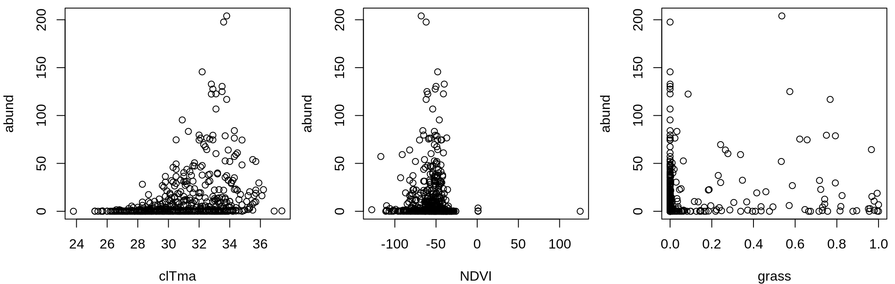
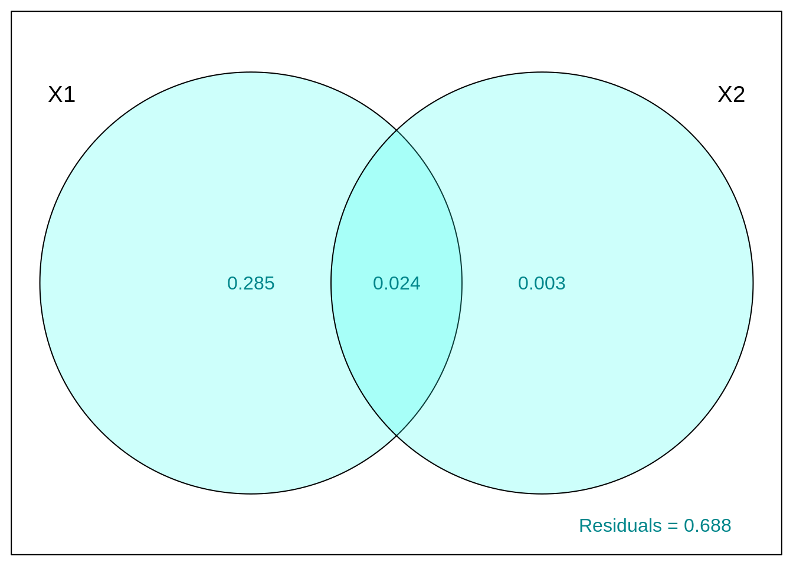

Chapter 7 Multiple linear regression

A multiple regression tests the effects of several continuous explanatory variables on a continuous response variable. It differs from simple linear regression by having more than one explanatory variable.
7.0.1 Model formulation
Variables
The multiple linear regression is defined by the variables \(y\) representing the response variable (continuous) and \(x\) for the explanatory variables (continuous or categorical).
The assumed relationship
The relationship between the response variable and the predictors is defined in the same way as for simple regression. The difference is in the addition of \(\beta\) parameters for the additional variables:
\[y_i = \beta_0 + \beta_1x_{1,i}+ \beta_2x_{2,i}+ \beta_3x_{3,i}+...+ \beta_kx_{k,i} + \epsilon_i\]
- The parameter \(\beta_0\) is the intercept (or constant)
- The parameter \(\beta_1\) quantifies the effect of \(x\) on \(y\)
- The residual \(\epsilon_i\) represents the unexplained variation
- The predicted value of \(y_i\) is defined as: \(\hat{y}_i = \beta_0 + \beta_1x_{1,i}+ \beta_2x_{2,i}+ \beta_3x_{3,i}+...+\beta_kx_{k,i}\).
The unexplained variation or error remains normally distributed, centered on zero with a variance of \(\sigma^2\) :
\[epsilon_i \sim \mathcal{N}(0,\,\sigma^2)\]
7.1 Assumptions
In the case of multiple linear regressions, two conditions are added to the usual conditions for linear models. First, there must be a linear relationship between each explanatory variable and the response variable. Second, the explanatory variables are independent of each other (there is no colinearity).
7.1.1 If variables are collinear
In case of collinearity, there are some solutions:
- Keep only one of the variables collinear
- Try a multidimensional analysis (see Workshop 9)
- Try a pseudo-orthogonal analysis
7.2 Multiple linear regression in R
7.2.1 The data
Using the Dickcissel dataset we will compare the relative importance of climate (clTma), productivity (NDVI) and soil cover (grass) as predictors of dickcissel abundance (abund).
## 'data.frame': 646 obs. of 15 variables:
## $ abund : num 5 0.2 0.4 0 0 0 0 0 0 0 ...
## $ Present : chr "Absent" "Absent" "Absent" "Present" ...
## $ clDD : num 5543 5750 5395 5920 6152 ...
## $ clFD : num 83.5 67.5 79.5 66.7 57.6 59.2 59.5 51.5 47.4 46.3 ...
## $ clTmi : num 9 9.6 8.6 11.9 11.6 10.8 10.8 11.6 13.6 13.5 ...
## $ clTma : num 32.1 31.4 30.9 31.9 32.4 32.1 32.3 33 33.5 33.4 ...
## $ clTmn : num 15.2 15.7 14.8 16.2 16.8 ...
## $ clP : num 140 147 148 143 141 ...
## $ NDVI : int -56 -44 -36 -49 -42 -49 -48 -50 -64 -58 ...
## $ broadleaf: num 0.3866 0.9516 0.9905 0.0506 0.2296 ...
## $ conif : num 0.0128 0.0484 0 0.9146 0.7013 ...
## $ grass : num 0 0 0 0 0 0 0 0 0 0 ...
## $ crop : num 0.2716 0 0 0.0285 0.044 ...
## $ urban : num 0.2396 0 0 0 0.0157 ...
## $ wetland : num 0 0 0 0 0 0 0 0 0 0 ...7.2.2 Verify assumptions
First, we must verify the presence of colinearity between all the explanatory and interest variables:
An observable pattern between two explanatory variables may indicate that they are colinear! You must avoid this, or their effects on the response variable will be confounded.
7.2.3 Linear regression
Now, let’s run the multiple regression of abundance (abund) against the variables clTma + NDVI + grass :
# Multiple regression
lm.mult <- lm(abund ~ clTma + NDVI + grass, data = Dickcissel)
summary(lm.mult)##
## Call:
## lm(formula = abund ~ clTma + NDVI + grass, data = Dickcissel)
##
## Residuals:
## Min 1Q Median 3Q Max
## -35.327 -11.029 -4.337 2.150 180.725
##
## Coefficients:
## Estimate Std. Error t value Pr(>|t|)
## (Intercept) -83.60813 11.57745 -7.222 1.46e-12 ***
## clTma 3.27299 0.40677 8.046 4.14e-15 ***
## NDVI 0.13716 0.05486 2.500 0.0127 *
## grass 10.41435 4.68962 2.221 0.0267 *
## ---
## Signif. codes: 0 '***' 0.001 '**' 0.01 '*' 0.05 '.' 0.1 ' ' 1
##
## Residual standard error: 22.58 on 642 degrees of freedom
## Multiple R-squared: 0.117, Adjusted R-squared: 0.1128
## F-statistic: 28.35 on 3 and 642 DF, p-value: < 2.2e-16Then, let us check the other assumptions, as for the simple linear regression:

7.2.4 Find the best-fit model
There is a principle of primary importance in model selection. It is the principle of parsimony. That is, explain the most variation with the least number of terms. We could therefore remove the least significant variable.
## Estimate Std. Error t value Pr(>|t|)
## (Intercept) -83.6081274 11.5774529 -7.221634 1.458749e-12
## clTma 3.2729872 0.4067706 8.046272 4.135118e-15
## NDVI 0.1371634 0.0548603 2.500231 1.265953e-02
## grass 10.4143451 4.6896157 2.220725 2.671787e-02All 3 variables are important. We keep everything!
The model explains 11.28% of the variability in dickcissel abundance \(R²_{adj} = 0.11\).
However, this information is not valid, because the conditions for applying the linear model are not met.
It is important to note that the response variable does not vary linearly with the explanatory variables:
par(mfrow = c(1, 3), mar = c(4, 4, 0.5, 0.5), cex = 1)
plot(abund ~ clTma, data = Dickcissel)
plot(abund ~ NDVI, data = Dickcissel)
plot(abund ~ grass, data = Dickcissel)
7.3 Polynomial regression (additional material)
As we noticed in the section on multiple linear regression, abund was non-linearly related to some variables
To test for non-linear relationships, polynomial models of different degrees are compared.
A polynomial model looks like this:
\[\underbrace{2x^4}+\underbrace{3x}-\underbrace{2}\]
This polynomial has 3 terms.
For a polynomial with one variable (\(x\)), the degree is the largest exponent of that variable. This is a the degree 4 polynomial:
\[2x^\overbrace{4} + 3x - 2\]
When you know a degree, you can also give it a name:
| Degree | Name | Example |
|---|---|---|
| 0 | Constant | \(3\) |
| 1 | Linear | \(x+9\) |
| 2 | Quadratic | \(x^2-x+4\) |
| 3 | Cubic | \(x^3-x^2+5\) |
| 4 | Quartic | \(6x^4-x^3+x-2\) |
| 5 | Quintic | \(x^5-3x^3+x^2+8\) |
Now we can fix our problem with the Dickcissel dataset by testing the non-linear relationship between max abundance and temperature by comparing three sets of nested polynomial models (of degrees 0, 1, and 3):
lm.linear <- lm(abund ~ clDD, data = Dickcissel)
lm.quad <- lm(abund ~ clDD + I(clDD^2), data = Dickcissel)
lm.cubic <- lm(abund ~ clDD + I(clDD^2) + I(clDD^3), data = Dickcissel)By comparing the polynomial models and determine which nested model we should keep:
##
## Call:
## lm(formula = abund ~ clDD, data = Dickcissel)
##
## Residuals:
## Min 1Q Median 3Q Max
## -17.062 -10.608 -7.758 -2.487 193.128
##
## Coefficients:
## Estimate Std. Error t value Pr(>|t|)
## (Intercept) 1.864566 2.757554 0.676 0.49918
## clDD 0.001870 0.000588 3.180 0.00154 **
## ---
## Signif. codes: 0 '***' 0.001 '**' 0.01 '*' 0.05 '.' 0.1 ' ' 1
##
## Residual standard error: 23.81 on 644 degrees of freedom
## Multiple R-squared: 0.01546, Adjusted R-squared: 0.01393
## F-statistic: 10.11 on 1 and 644 DF, p-value: 0.001545##
## Call:
## lm(formula = abund ~ clDD + I(clDD^2), data = Dickcissel)
##
## Residuals:
## Min 1Q Median 3Q Max
## -14.057 -12.253 -8.674 1.495 190.129
##
## Coefficients:
## Estimate Std. Error t value Pr(>|t|)
## (Intercept) -1.968e+01 5.954e+00 -3.306 0.001 **
## clDD 1.297e-02 2.788e-03 4.651 4.00e-06 ***
## I(clDD^2) -1.246e-06 3.061e-07 -4.070 5.28e-05 ***
## ---
## Signif. codes: 0 '***' 0.001 '**' 0.01 '*' 0.05 '.' 0.1 ' ' 1
##
## Residual standard error: 23.53 on 643 degrees of freedom
## Multiple R-squared: 0.04018, Adjusted R-squared: 0.0372
## F-statistic: 13.46 on 2 and 643 DF, p-value: 1.876e-06##
## Call:
## lm(formula = abund ~ clDD + I(clDD^2) + I(clDD^3), data = Dickcissel)
##
## Residuals:
## Min 1Q Median 3Q Max
## -14.417 -12.247 -8.394 1.473 189.955
##
## Coefficients:
## Estimate Std. Error t value Pr(>|t|)
## (Intercept) -1.465e+01 1.206e+01 -1.215 0.225
## clDD 8.612e-03 9.493e-03 0.907 0.365
## I(clDD^2) -1.628e-07 2.277e-06 -0.071 0.943
## I(clDD^3) -8.063e-11 1.680e-10 -0.480 0.631
##
## Residual standard error: 23.54 on 642 degrees of freedom
## Multiple R-squared: 0.04053, Adjusted R-squared: 0.03605
## F-statistic: 9.04 on 3 and 642 DF, p-value: 7.202e-06Which one should you keep?
7.4 Variation Partitioning (additional material)
Some of the selected explanatory variables in the multiple linear regression section were highly correlated./
Collinearity between explanatory variables can be assessed using the variance inflation factor vif() function of package car.
Variable with VIF > 5 are considered collinearity.
## clFD clTmi clTma clP grass
## 13.605855 9.566169 4.811837 3.196599 1.165775In this example, clDD is correlated with clFD,clTmi and clTma.
Instead of removing variable from the modal, we can reduce effect of colinearity by grouoping variables together. You can use varpart() to partition the variation in max abundance with all land cover variables ("broadleaf","conif","grass","crop", "urban","wetland") in one set and all climate variables in the other set ("clDD","clFD","clTmi","clTma","clP"). We can leave out NDVI for now.
library(vegan)
part.lm = varpart(Dickcissel$abund, Dickcissel[, c("clDD", "clFD",
"clTmi", "clTma", "clP")], Dickcissel[, c("broadleaf", "conif",
"grass", "crop", "urban", "wetland")])
part.lm##
## Partition of variance in RDA
##
## Call: varpart(Y = Dickcissel$abund, X = Dickcissel[, c("clDD", "clFD",
## "clTmi", "clTma", "clP")], Dickcissel[, c("broadleaf", "conif",
## "grass", "crop", "urban", "wetland")])
##
## Explanatory tables:
## X1: Dickcissel[, c("clDD", "clFD", "clTmi", "clTma", "clP")]
## X2: Dickcissel[, c("broadleaf", "conif", "grass", "crop", "urban", "wetland")]
##
## No. of explanatory tables: 2
## Total variation (SS): 370770
## Variance: 574.84
## No. of observations: 646
##
## Partition table:
## Df R.squared Adj.R.squared Testable
## [a+b] = X1 5 0.31414 0.30878 TRUE
## [b+c] = X2 6 0.03654 0.02749 TRUE
## [a+b+c] = X1+X2 11 0.32378 0.31205 TRUE
## Individual fractions
## [a] = X1|X2 5 0.28456 TRUE
## [b] 0 0.02423 FALSE
## [c] = X2|X1 6 0.00327 TRUE
## [d] = Residuals 0.68795 FALSE
## ---
## Use function 'rda' to test significance of fractions of interestNote: Collinear variables do not have to be removed prior to partitioning.
With showvarpart(), we can visualise hpow these two groups (land cover and climate) explain variation in abund.
For example:

`?`(showvarparts)
# With two explanatory tables, the fractions explained
# uniquely by each of the two tables are ‘[a]’ and ‘[c]’,
# and their joint effect is ‘[b]’ following Borcard et al.
# (1992).Let’s try with our dataset Dickcissel and our model.

Proportion of variance explained by:
- Climate alone is 28.5% (given by X1|X2).
- Land cover alone is ~0% (X2|X1).
- Both combined is 2.4%.
Unexplained variation by these groups (residuals) is 68.8%.
We can now test the significance of each fraction:
- Climate
out.1 = rda(Dickcissel$abund, Dickcissel[, c("clDD", "clFD",
"clTmi", "clTma", "clP")], Dickcissel[, c("broadleaf", "conif",
"grass", "crop", "urban", "wetland")])- Land cover
out.2 = rda(Dickcissel$abund, Dickcissel[, c("broadleaf", "conif",
"grass", "crop", "urban", "wetland")], Dickcissel[, c("clDD",
"clFD", "clTmi", "clTma", "clP")])## Permutation test for rda under reduced model
## Permutation: free
## Number of permutations: 999
##
## Model: rda(X = Dickcissel$abund, Y = Dickcissel[, c("clDD", "clFD", "clTmi", "clTma", "clP")], Z = Dickcissel[, c("broadleaf", "conif", "grass", "crop", "urban", "wetland")])
## Df Variance F Pr(>F)
## Model 5 165.12 53.862 0.001 ***
## Residual 634 388.72
## ---
## Signif. codes: 0 '***' 0.001 '**' 0.01 '*' 0.05 '.' 0.1 ' ' 1## Permutation test for rda under reduced model
## Permutation: free
## Number of permutations: 999
##
## Model: rda(X = Dickcissel$abund, Y = Dickcissel[, c("broadleaf", "conif", "grass", "crop", "urban", "wetland")], Z = Dickcissel[, c("clDD", "clFD", "clTmi", "clTma", "clP")])
## Df Variance F Pr(>F)
## Model 6 5.54 1.5063 0.167
## Residual 634 388.72The land cover fraction is non-significant once climate data is accounted for, which is not surprising given the low variation explained by the land cover.
Thanks to variation partitioning, we were able to account for the collinearity of our variables and still test the effect of the climate and land cover in a simple and easy way!